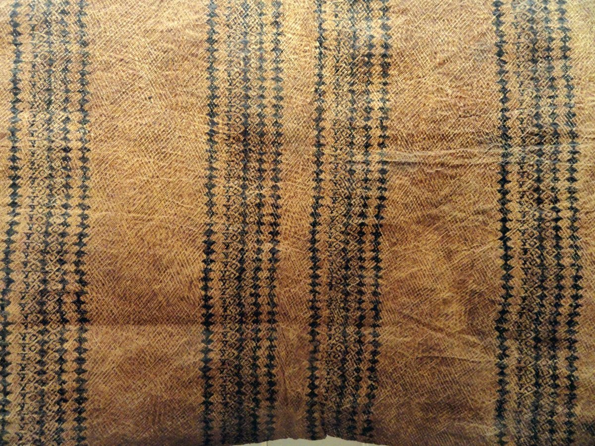
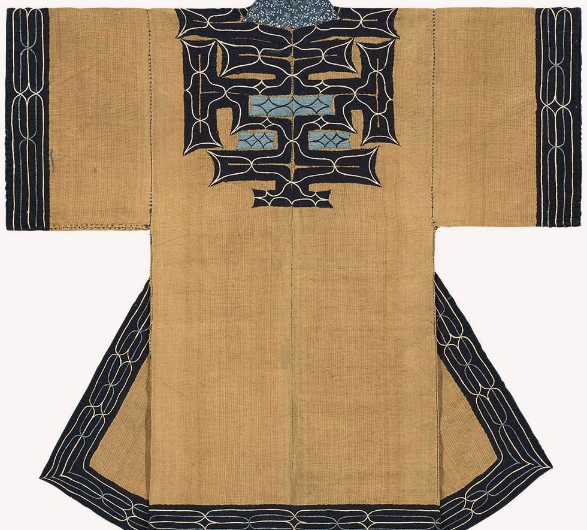
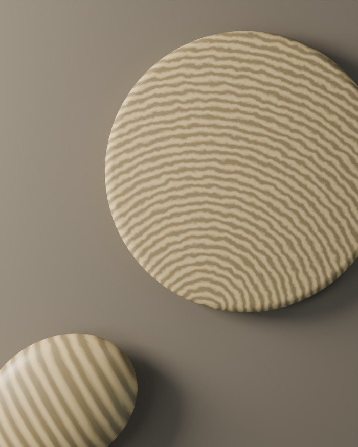
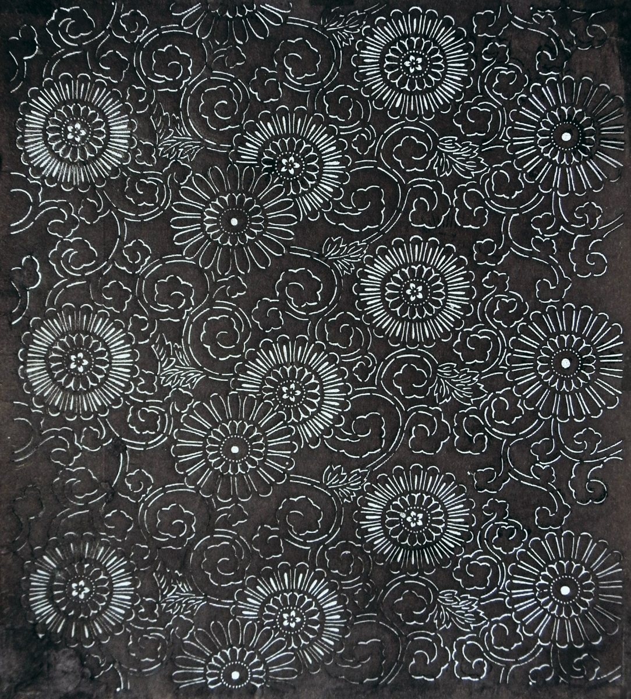
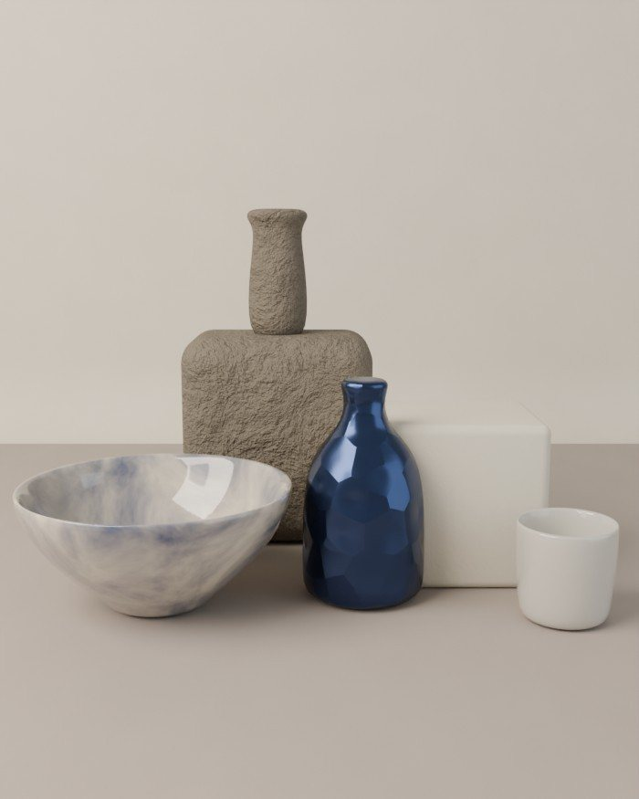
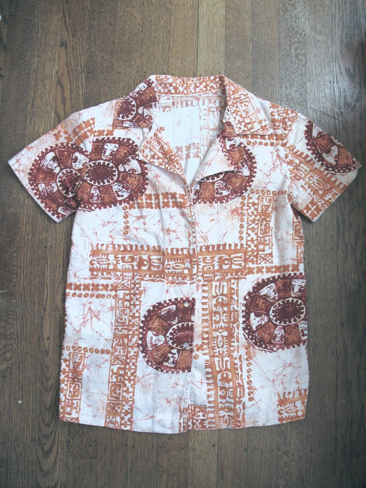
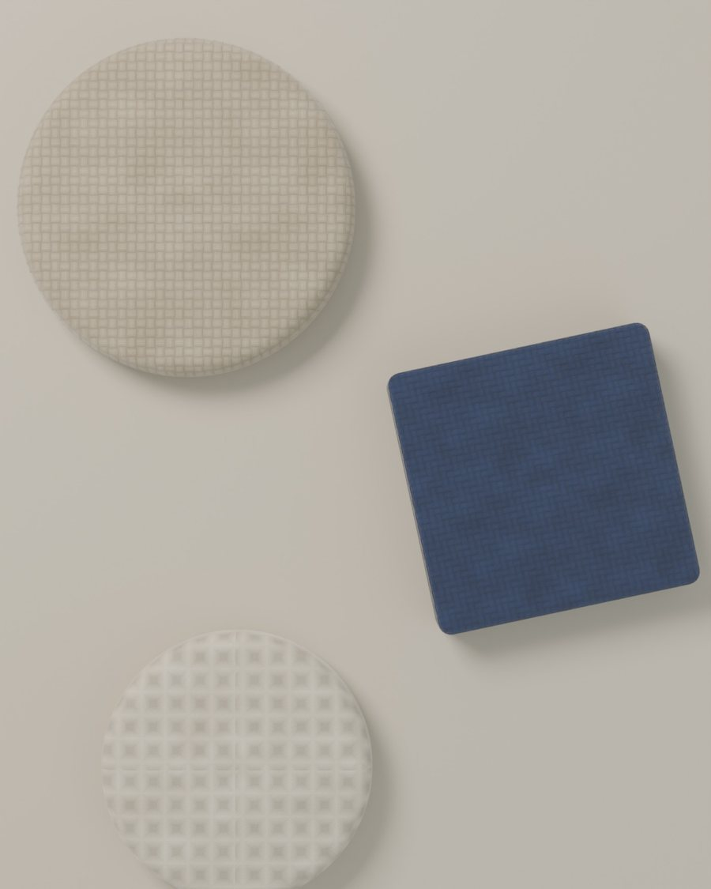
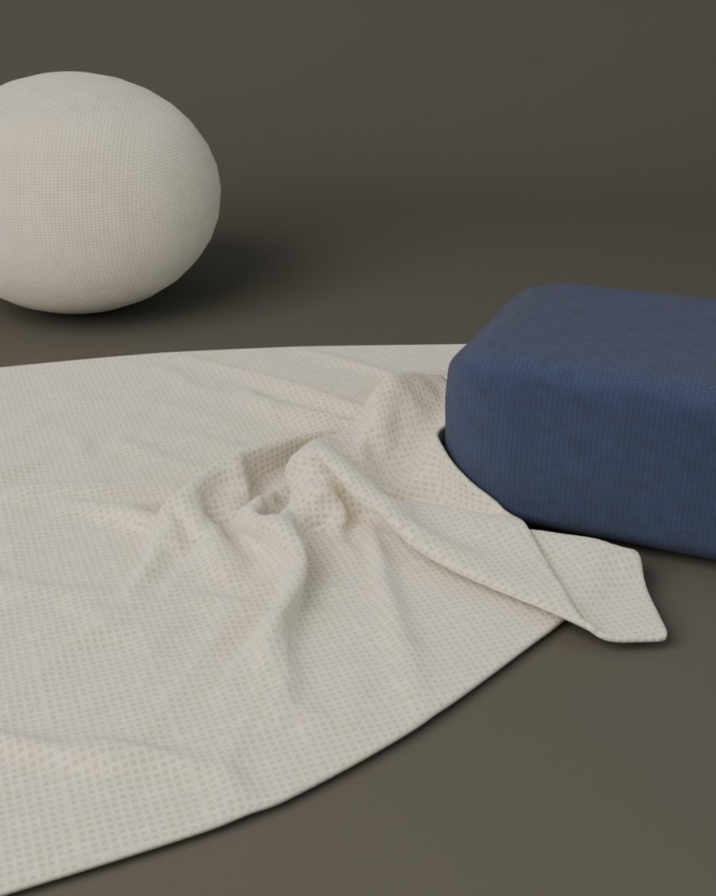

The facade
The picture is not the thing.






Abstract
How was the look of a building or object used to get things done, and where did the picture come apart from the thing? Colonial architecture is the clearest case, because the facade made the argument: classical order in a capital planned from 1911 to command, a friendly style that historians read as an attempt to win consent, a blended style that still controlled, and an old quarter kept apart from the new city. It backfired: the old quarter was left to decay, and the government building Japan set in front of a Korean palace became the symbol people began tearing down in 1995. Japan stood on both sides: Yanagi, the critic who championed the unknown craftsman, pleaded in 1922 for the palace gate cleared for that building, yet framed Korean craft as a beauty of sorrow, and the gate was only moved. Design then split two ways: craft by those with a stake in a region, and an international style that pursued purity until it was criticized for its European, antiquity-bound roots. The international look became a status of its own by removing the hand, and with it the labor, the working class and the poor. Home building copied the facade everywhere, keeping the look and leaving the makers behind. Luxury handwork follows the same rule: labor is worth money only while no mistake shows who made it, as in a flawless marble figure, so what a hand is worth is never fixed. Today the picture comes first: renderings and simulations set expectations of texture, finish and performance before anything is made, so the image becomes part of the design and not a description of it. What can a designer's picture promise, and to whom, that the maker can still deliver?
Image notes
(01) Kapa (Hawaiian bark cloth) with banded stamped pattern, collected before 1890, Peabody Museum, Harvard University. Photo Daderot, CC0. https://commons.wikimedia.org/wiki/File:Kapa_or_Tapa_cloth,_Hawaii,_collected_before_1890_-_Pacific_collection_-_Peabody_Museum,_Harvard_University_-_DSC05747.JPG
(02) Form study (stripes color). Own render.
(03) Ainu attush robe, Hokkaido, 19th century: elm-bark cloth with indigo appliqué and embroidery. Minneapolis Institute of Art. Public domain (Wikimedia Commons). https://commons.wikimedia.org/wiki/File:Ainu_attush_robe,_Hokkaido,_Japan,_19th_c.JPG
(04) CMF study (close2 b mid). Own render.
(05) Japanese katagami stencil, chrysanthemums and scrolling vine, for resist dyeing. Public domain (Wikimedia Commons, unknown maker). https://commons.wikimedia.org/wiki/File:Japanese_Katagami_Stencil_Floral_Ornament.jpg
(06) Scene study (cluster light). Own render.
(07) Counter-case: vintage aloha shirt with tiki-style printed pattern, maker and source of pattern not stated. Photo Omaopio, public domain. https://commons.wikimedia.org/wiki/File:Vintage_aloha_shirt.JPG
Impact



Direction
The intended effect of the theme on the people who use the material and product, for example calm, strong or empowered. How the three images above translate the theme: form, CMF, scene. Color named briefly, not specified.
Approach
Translating the theme into a material approach
How the impact above becomes a material question: the target to reach and how success will be measured, set out as Before and After below.
- Approach
- current and previous approach; what worked, what didn't
- Materials
- fibers, constructions, finishes in use, past and now
- Tools
- equipment and software available, past and now
- Process
- how it is made today
- Against
- what the theme stands against
- Counter-case
- work that looks like the theme but fails it
- Improvement
- what will be better
- Materials
- what we need
- Tools
- what we need
- Process
- what changes
- Measure
- how success is checked
- Known issues
- why it hasn't been done or achieved before
- Side effects
- what it could bring
- Contingency
- plan if it fails
Resources
What we can work with today
The people, equipment, methods, materials and measures already available to carry out the approach above, and where the gaps are.
- Designers
- Name, studio; Name, studio
- Artists
- Name; Name; Name
- Mills
- Mill name, country; Mill name, country
- Labs
- Lab or institute, focus
- Vendors
- Supplier, product line
- Researchers
- Name, institution, field
- Existing cases
- A sentence on a brand or project already working this way and what it shows.
- Machines
- water jet loom, sonic laser, digital jacquard
- Media
- media format, print, film
- Software
- Blender, Illustrator, Vizcom
- Reference
- Wikipedia, AI, image archives
- Making
- pigment dye, laser cut, bonding
- Market
- segmentation, niche marketing, mass approach
- In store
- object, brand, where seen
- Media
- seen on TV, film, print
- Museum
- piece, collection
- Automotive
- fabric in current cars, model, year
- Feedback
- clinic, user test
- Testing
- lab tests, standards
- Expert
- professional opinion
- Online
- forums, online chat, reviews
References
- Books
- Author Name. Book title (year). Publisher.
- Articles and research
- Author Name. Article title (2025). Journal or magazine, vol. (issue), pages. URL.
- Institution or lab. Study title (2024). Report or paper number. DOI.
- White papers and vendors
- Company. Document title (2026). Publisher. URL.
- Mill or supplier. Product or material name (2026). Catalog, item number. URL.
- Exhibitions
- Venue. Exhibition title (2024). City, dates. URL.